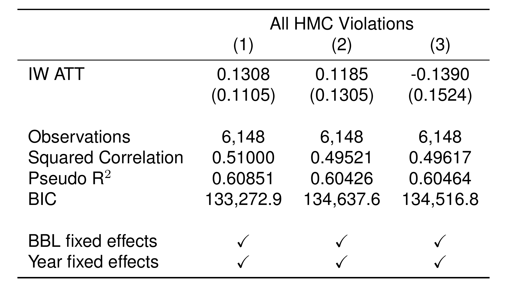
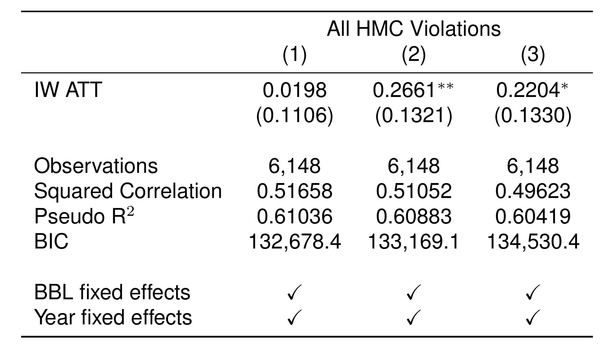

Official SWL Vs. Alternative Methodology DiD Analysis
Author
Brady Kennedy
library(fixest)library(ggplot2)
Warning: package 'ggplot2' was built under R version 4.4.3
library(ggfixest)library(dplyr)
Attaching package: 'dplyr'
The following objects are masked from 'package:stats':
filter, lag
The following objects are masked from 'package:base':
intersect, setdiff, setequal, union
library(readr)
This analysis compares two ways of identifying speculative purchases of rent-regulated buildings:
The official HPD Speculation Watchlist (SWL), which uses borough-level capitalization rate thresholds at the time of sale.
An alternative NTA-based threshold, which flags buildings with relatively low capitalizations rates given the respective neighborhood (NTA) and quarter, a more local measure of unusually low returns on building purchases.
For each definition, I estimate how a suspected speculative purchase affects:
The number of executed evictions in the building.
The number of HPD housing maintenance code violations (all classes).
All models are estimated using Sun & Abraham’s (2020) heterogeneous treatment event-study DiD framework with building-level and year-level fixed effects (see the methodological appendix for additional notes).
The coefficients on the interaction-weighted average treatment effect on the treated (IWATT) for all models are significant and model fit is similar across models. However, in Model 1 and Model 2, the effect is strong and positive, indicating a relatively greater level of evictions in buildings with suspected speculative sales, while in Model 3 the coefficient flipsnegative. Though the change in the sign in the coefficient may be due to the relatively smallerproportion of treated units in the third model, these results at present must be interpreted as presenting an ambiguous relationship between real estate speculation as identified by relativecapitalization rate at the borough level and the number of evictions in periods following a potentially speculative purchase.
NTA-Level Methodology
When repeating the above analysis at the NTA level, all coefficients are positive and model fit is similarly strong across models. These results suggest a strong relationship between a relatively low capitalization rate at time of purchase when measured at the neighborhood level and an annual increase in the number of evictions at the purchased property in years following the sale, with a 25% cutoff in capitalization rates producing the most sensitive response.
HPD Violations
Official SWL (Borough-Level) Methodology

There appears to be no significant relationship between the number of HPD violations and a building’s status according to these three watchlist specifications when the official SWL (borough-level) speculative sale indicator criteria is applied.
NTA-Level Methodology

Alternatively setting the threshold at the NTA’s quarterly bottom 25th percentile of capitalization rates leads to a stronger level of statistical significance and improves model fit overall. Applying a capitalization rate based speculation indicator at the NTA level appears overall more sensitive regardless of the cutoff rate selected.
Speculative acquisitions of rent-regulated buildings appear to be followed by sustained increases in eviction activity and increases in HPD violations. These effects are stronger when speculation is identified using a neighborhood-relative (NTA bottom-quartile) capitalization rate threshold, suggesting that this more local benchmarks is more sensitive to speculative behavior than the official borough-level Speculation Watchlist.